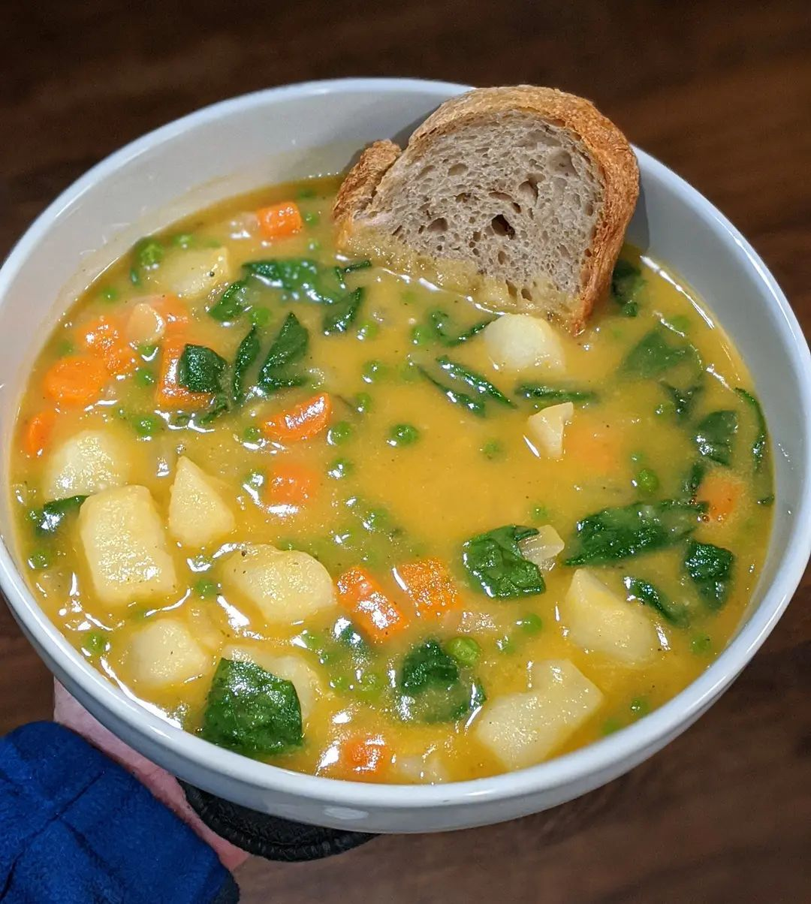
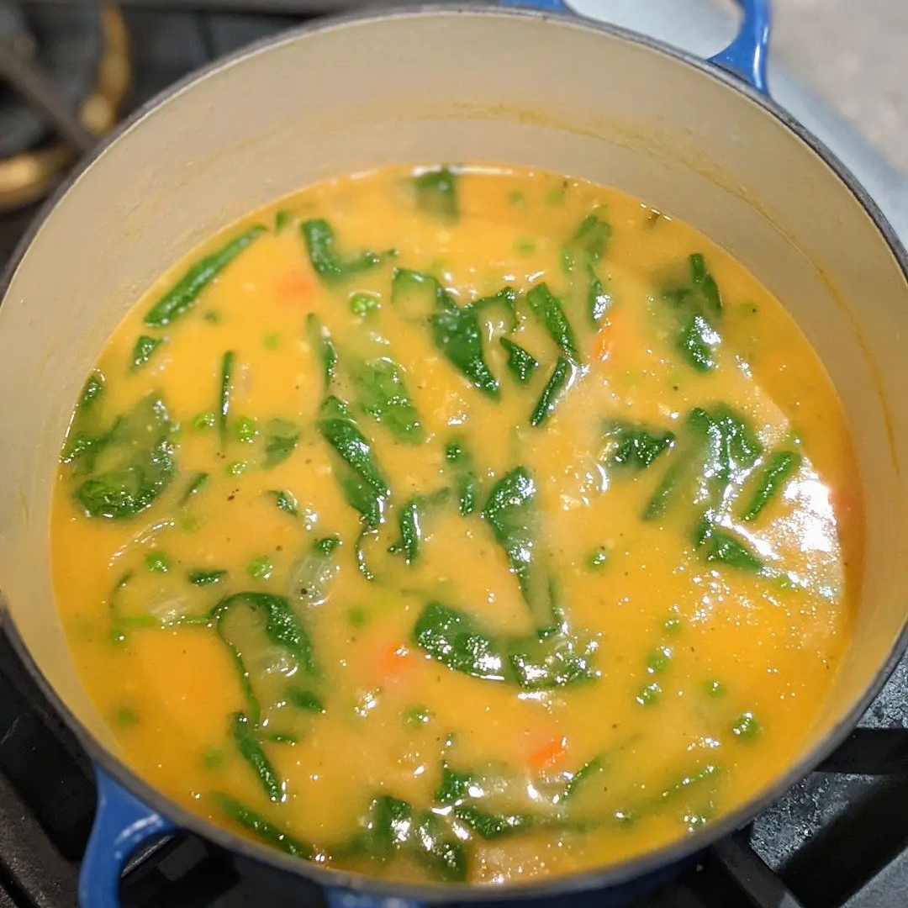

Hearty Vegetable Soup


Description
A humble soup that shows vegetables can stand on their own. A great way to welcome fall as the summer herbs subside and we are left with hearty rosemary and root vegetables. Use homemade chicken stock (or broth) if you can as homemade stock is the backbone of a good soup. Serves 2 as a main. Serve with freshly baked whole grain bread.
Ingredients
- 2T extra virgin olive oil
- 1 onion (1/2" dice)
- 3 carrots (peel, 1/2" chunks)
- 1 parsnip (peel, 1/2" chunks)
- 3 cloves garlic (mince)
- 4C chicken stock
- 1 russet potato (peel, 1" cubes) or turnip/rutabaga
- 1 (15oz) can cannellini beans (drain/rinse) (optional)
- 1 sprig thyme
- 1 sprig rosemary
- 1 bay leaf
- 1 slice (2oz) bread (lightly toasted)
- 1 tsp kosher salt
- black pepper
- 1/2C (5oz) frozen peas
- 2 tsp your favorite vinegar (I like white wine vinegar)
- 1C (packed) spinach
Steps
- In 4qt or larger pot, soften.. olive oil, onion, carrots, and parsnip.
- Add garlic and fry for 30 seconds.
- Add potato, beans (if using), broth, thyme, rosemary, bay, and salt. Simmer, covered, until potatoes can be easily pierced with a knife (10min+).
- Discard rosemary, thyme, and bay.
- Transfer 2C soup to a blender with the bread and a few cranks of black pepper. Blend well.
- Return the blended stuff to the pot.
- Add the frozen peas to the soup too.
- Add your favorite vinegar and the spinach.
- Once the spinach is wilted you are ready to serve!
Note I really wanted pumpkin pie after this.